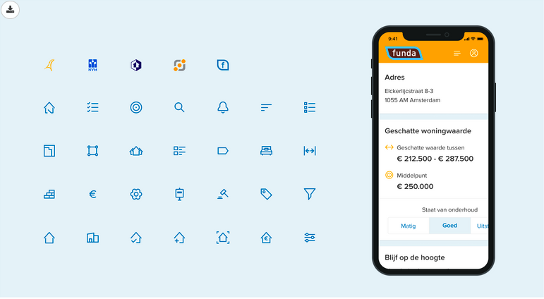
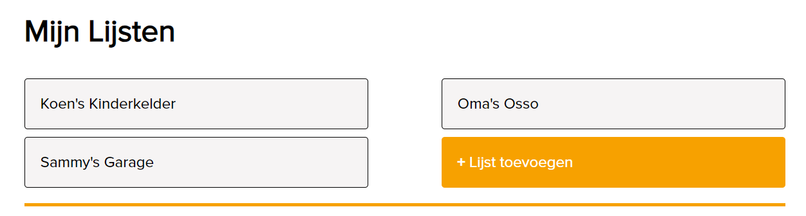
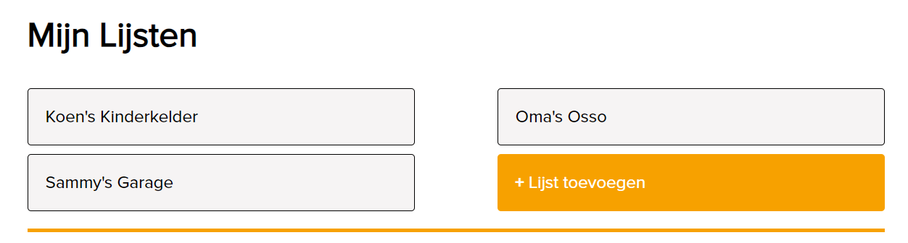
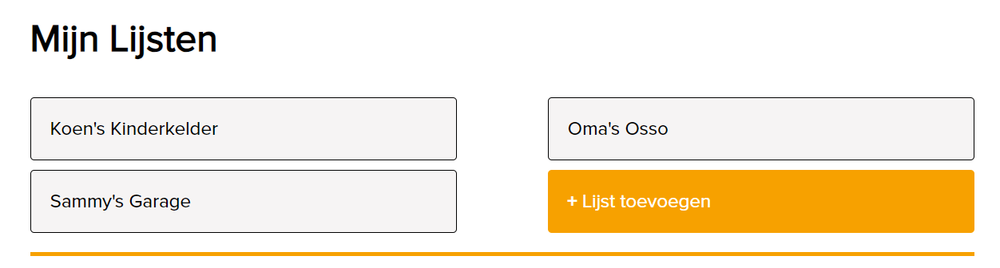

De kenmerkende funda-kleur die we in alle uitingen gebruiken,
afhankelijk van het type uiting en doelgroep. Het kenmerkende
oranje accentueert het wonen.
Lochmara
In tegenstelling tot de opvallende oranje kleur, wordt blauw
vaak gebruikt voor de zakelijke categorieën op
Funda.
White
Wit is het uitgangspunt. Het creëert focus. Gebruik white voor
de achtergrondkleur ter ondersteuning van het lichte karakter van funda.
Mine Shaft
De hoofdkleur voor alle teksten.
Kleurgebruik typografie
Funda bruin
Dit is tekst omdat het tekst is
Funda oranje
Dit is tekst omdat het tekst is
Funda blauw
Dit is tekst omdat het tekst is
Funda wit
Dit is tekst omdat het tekst is
Icons 💟

Funda heeft een uitgebreide iconenset passend bij de stijl en typografie
van het merk. Elk icoon is simpel, duidelijk, vriendelijk en geschikt om
te gebruiken op kleine formaten. Een icoon heeft slechts de functie
extra context aan de boodschap te geven. Wil je nadruk leggen op een
icoon? Dan geef het een cirkel achtergrond met een pakkende kleur.
Choose descriptive class names that convey the meaning or purpose of the icon, such as <i class="star-icon yellow star">/i>
Media, Content Images, Typography
Media omvat alle visuele en auditieve elementen, content images zijn afbeeldingen die inhoud ondersteunen, en typography gaat overlettertypes.
Media en afbeeldingen trekken de aandacht, terwijl typography de leesbaarheid en uitstraling beïnvloedt.
Media moet relevant zijn, afbeeldingen moeten de boodschap ondersteunen, en typography moet leesbaar en passend zijn.
Bij Funda is het lettertype Proxima Nova één van de belangrijkste huisstijl elementen. Het is leesbaar voor zowel web, app als print. Proxima Nova heeft een vriendelijk uiterlijk en is zowel karakteristiek als flexibel.
hoe te gebruiken:
Proxima Nova Regular voor body teksten
Proxima Nova SemiBold voor koppen en quotes (h1 15em, h2 9em, h3 6em)
Voor print kies je een variant tussen Light en Extra Bold
Hoe korter het woord of de zin hoe groter de tekst kan zijn
<div style="margin-right: 20px;">
<img src="path/to/your/image.jpg" alt="Bad Example Image">
Avoid using inline styles for media containers.
Use a separate CSS file or style block for better organization and maintainability.
Logo's
Het logo is het herkenbare beeldmerk van Funda
Het logo is het herkenbare beeldmerk van Funda, het is het gezicht van
Funda en draagt bij aan de merkidentiteit. Het logo moet consistent
worden toegepast en duidelijk zichtbaar zijn op alle pagina's.
Funda heeft 4 soorten logo's waardoor de gebruiker weet waar hij zich
bevindt:
Het logo met de oranje rand is het primaire logo, verwijzend naar de
oranje hoofdkleur van funda wonen. Je gebruikt dit logo op een witte
achtergrond.
Het logo met de blauwe rand gebruik je alleen bij een oranje
achtergrond. Probeer het gebruik van dit logo op een niet-oranje
achtergrond te vermijden.
Het mini logo is het logo voor de app.
Het logo met de blauwe rand en bruine letters is het primaire logo,
verwijzend naar de blauwe hoofdkleur voor zakelijke gebruikers. Je
gebruikt dit logo op een witte achtergrond.
Als de primaire logo's niet worden ondersteund, gebruik je het logo in
zwart-wit. Dit is alleen toegestaan wanneer er geen andere opties
mogelijk zijn.
Buttons, Forms, Tables
Consistente Knoppen
Binnen Funda's huisstijl wordt opmerkelijke aandacht besteed aan de
consistentie van kleurgebruik,
zelfs in de kleinste details, zoals knoppen. De kleuren die worden
toegepast op de knoppen
zijn niet alleen visueel aantrekkelijk, maar dienen ook een strategisch
doel, vooral gericht op specifieke doelgroepen.
Oranje:
Voor gebruikers die op zoek zijn naar woninggerelateerde informatie.
Het trekt niet alleen de aandacht van de gebruiker, maar het
creëert ook een directe associatie met het hoofddoel van Funda:
het vinden en verkopen van huizen. Het dient als visuele
wegwijzer.
In tegenstelling tot de opvallende oranje kleur, wordt blauw
vaak gebruikt voor knoppen binnen de zakelijke categorieën op
Funda. Gebruikers die dus op zoek zijn naar zakelijke
informatie, zullen eerder blauwe en witte knoppen tegenkomen.
Ook hier blijkt Funda consistent te zijn met het gebruik van
huisstijlkleuren in formulieren.
Het gebruik van oranje, blauw en wit is niet willekeurig, maar
afgestemd op de specifieke doelstellingen en doelgroepen van de
formulieren. Er is een overzichtelijke indeling van formulieren,
elke stap is duidelijk met gebruiksvriendelijke labels en instructies om
de gebruiker te begeleiden.
Binnen Funda's ontwerp valt op dat het gebruik van tabellen beperkt is.
Funda kiest eerder voor eenvoud en minimalisme, waarbij informatie
vaak op een gestructureerde en overzichtelijke manier wordt
gepresenteerd zonder het gebruik van tabellen.
Compositions and Hierarchy
Compositie en Hierarchy op de site van Funda

Bij compositie worden verschillende visuele elementen, zoals logo's,
kleuren, tekst, grafische vormen, beelden en iconen, gecombineerd...
Compositie staat in de beeldende kunst voor 'de ordening van beeldelementen in een vlak of ruimte'.
Als fotograaf leidt je met je compositie een kijker door het beeld en bepaal je waar iemand als eerste naar kijkt.
Je kunt je aan de 'regels' houden, of bewust van de gebaande regels afwijken.
Navigation
Navigatie omvat de menu's en links waarmee gebruikers door de website
kunnen bewegen...


 
